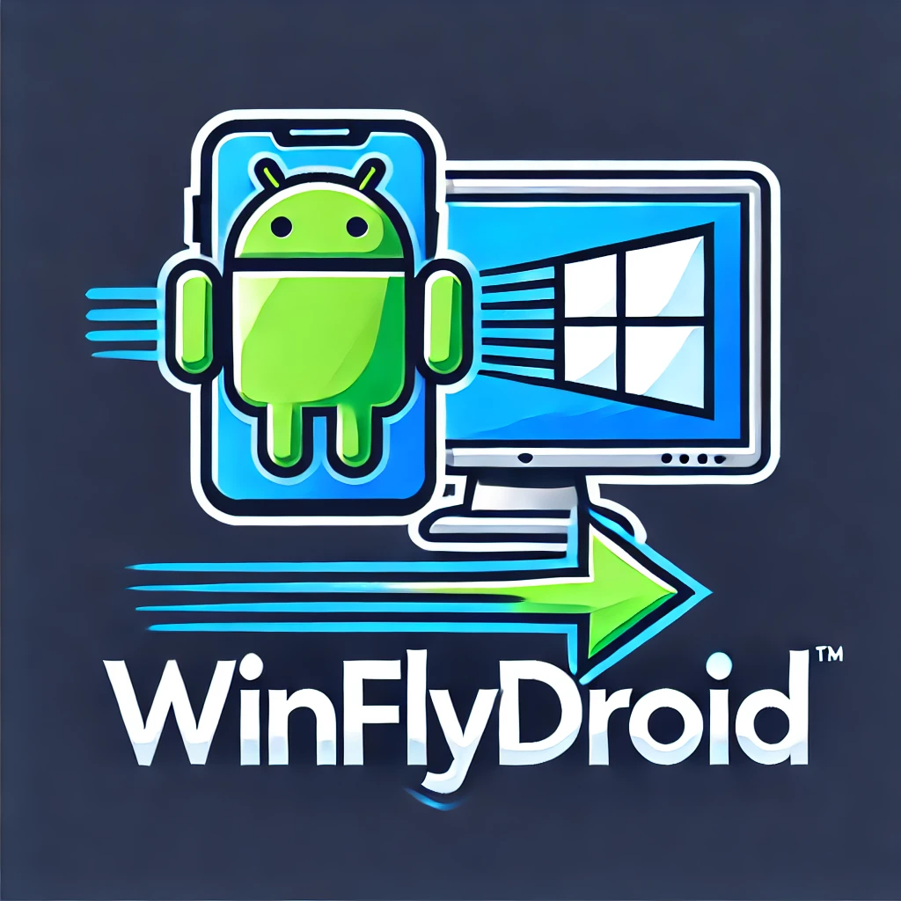

WinFlyDroid
IP del servidor:
Contraseña:
Escanea para conectar
WinFlyDroid
Carpeta de archivos
Arrastra archivos o haz clic para seleccionar
Archivos pendientes:
Subir archivos
Archivos disponibles
Actualizar lista